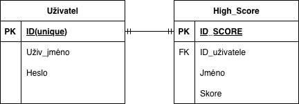

📖 DOKUMENTACE
Popis hry, kódu a webového systému
Přehled hry
Tetris je klasická arkádová puzzle hra z roku 1984. Cílem je skládat padající kostičky (tzv. tetromina) tak, aby tvořily plné vodorovné řádky. Každý dokončený řádek zmizí a hráč získá body. Hra končí, když kostičky dosáhnou vrcholu hrací plochy.
Tato implementace je napsána v Pythonu s využitím knihovny pygame.
Obsahuje dva herní módy, animace, online i offline ukládání highscores
a přizpůsobení rozlišení obrazovky.
Ovládání
| Klávesa | Akce | Mód |
|---|---|---|
| ← / A | Pohyb doleva | Oba |
| → / D | Pohyb doprava | Oba |
| R | Rotace kostičky o 90° | Oba |
| ↓ / S | Soft drop (rychlejší pád) | Normal |
| ↓ | Hard drop (okamžitý pád) | Hard |
| Mezerník | Hard drop (okamžitý pád) | Oba |
| ESC | Pauza / pokračování | Oba |
| M | Zpět do menu (při pauze) | Oba |
Bodování
Každý smazaný řádek přidá 100 bodů. Pokud smažeš více řádků
najednou, dostaneš bonus za každý z nich.
| Akce | Body |
|---|---|
| 1 řádek | 100 |
| 2 řádky najednou | 200 |
| 3 řádky najednou | 300 |
| 4 řádky najednou (Tetris) | 400 |
Herní módy
Normal
Klasický mód. Kostičky padají normální rychlostí.
Hard
Těžší mód. Kostičky padají rychleji od začátku.
Struktura kódu hry
Celá hra je v jednom souboru tetris.py.
Kostičky (Piece)
# Příklad: kostička I
SHAPES = [[[1, 1, 1, 1]]]Herní mřížka
Hrací plocha je seznam 20 řádků po 10 barvách.
Systém highscores
Skóre se ukládají do souboru highscores.json.
Vývojový diagram
Tento diagram zobrazuje logický průběh hry, od inicializace až po herní smyčku a kontrolu konce hry (Game Over).

(Kliknutím na obrázek jej otevřete v plné velikosti)
Přehled webového systému
Web je statický a využívá localStorage prohlížeče.
Systém autentizace
Soubor js/auth.js implementuje celý auth systém.
Struktura souborů
tetris-web/
├── index.html
├── images/
│ └── diagram.png
└── ...Prezentace Prezentace
Odkaz na prezentaci projektu: